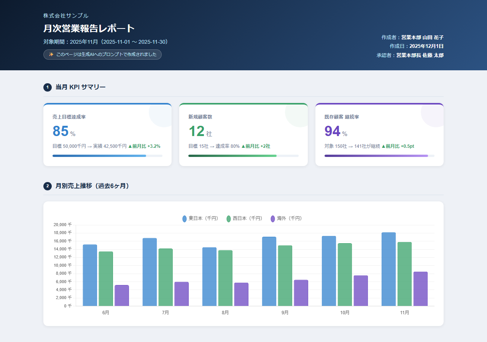

第3章 生成AIと一緒にHTMLを作る
📂 本章のサンプルファイル:ch03_report.html
ブラウザで開くと、本章で解説するHTMLコンテンツを実際に操作できます。
本書サポートサイトからダウンロードしてください。
はじめに
「HTMLを作ってみたい」と思っても、コードの書き方を学ぶことを考えると、途端に腰が重くなる——そういう経験をした方は多いのではないでしょうか。
この章では、その「ハードル」を根本から取り払います。
生成AIの登場によって、HTMLは「コードを書ける人が作るもの」から「何を作りたいかを言葉にできる人が作るもの」に変わりました。あなたに必要なのは、HTMLの文法ではありません。自分の仕事の成果物を言語化する力です。
本章では、生成AIへのHTML依頼の基本から、用途別のプロンプトパターン、修正を重ねて品質を上げる対話技術まで、実際の業務シーンを通じて学んでいきます。
3-1 生成AIへのHTML依頼の基本
「何を作りたいか」を言語化することが最初の一歩
突然ですが、あなたが普段作っている業務上の成果物を、一文で説明することはできますか？
「月末に提出する営業報告書」「新入社員向けの業務手順ガイド」「週次の進捗をまとめるダッシュボード」——このように言語化できるものは、すでに生成AIへの依頼の出発点に立っています。逆に言えば、「なんとなく見栄えのいいページ」という曖昧なイメージしかない状態では、生成AIも期待に応えられません。
生成AIへのHTML依頼において、プロンプト（依頼文）の品質がそのまま成果物の品質に直結します。これはHTMLに限らず、すべての生成AI活用に共通する原則です。
では、何を言語化すればよいのでしょうか。HTMLを依頼するときのプロンプトは、大きく三つの要素から構成されます。
①目的（Purpose）：このHTMLを誰に見せるのか、何のために使うのか。「社内の営業チームが毎月参照する報告ページ」「取引先に提出する提案書」「新人研修の手順ガイド」など、使われる文脈を明確にします。
②要素（Elements）：何を含めるのか。見出し・本文・表・グラフ・画像・ボタンなど、ページに入れたいコンテンツを列挙します。「先月の売上数字（表形式）」「各担当者のKPI達成率」「来月の行動計画」といった具体的な内容を指定します。
③スタイル（Style）：どんな見た目にしたいのか。「シンプルで読みやすく」「企業らしいフォーマルな印象」「カラフルで視覚的にわかりやすく」など、デザインの方向性を伝えます。
この三要素を盛り込んだプロンプトを書くだけで、生成AIは驚くほど的確なHTMLを生成してくれます。
良いプロンプトの構造：目的・要素・スタイル
具体的なプロンプト例を見てみましょう。
曖昧なプロンプト（改善前）
月次営業報告のHTMLを作ってください。これだけでも生成AIは何かを作りますが、「誰が見るのか」「何の数字を入れるのか」「どんな見た目がよいのか」がわからないため、汎用的で使いにくい結果になりがちです。
具体的なプロンプト（改善後）
【目的】
社内の営業マネージャーが月末に確認する「月次営業報告ページ」を
HTML1ページで作成してください。
【含める要素】
・タイトル：「2025年10月 営業部月次報告」
・担当者別の売上実績表（担当者名、目標、実績、達成率の4列）
・今月のトピックス（箇条書き3〜5件）
・来月の重点施策（箇条書き3件）
【スタイル】
・シンプルで読みやすいビジネス向けデザイン
・ヘッダーは紺色系、白文字
・表には交互に薄いグレーのしま模様（ゼブラストライプ）を入れる
・全体的にすっきりした印象にするこのプロンプトを生成AIに渡すと、ヘッダー付きの見出し、整形された表、箇条書きのセクションが揃った、実際に使えるレベルのHTMLが生成されます。コードを一行も書かずにです。
生成されたHTMLをブラウザで確認する方法
生成AIがHTMLを生成したら、次はそれをブラウザで確認する必要があります。非エンジニアには少しなじみのない操作かもしれませんが、手順は非常にシンプルです。
ステップ1：HTMLをコピーする
生成AIが出力したHTMLコード全体を選択してコピーします。<!DOCTYPE html> という行から始まり </html> で終わる部分がHTML全体です。
ステップ2：テキストエディタに貼り付けて保存する
Windowsのメモ帳（Notepad）を開き、コピーしたHTMLを貼り付けます。ファイル名を「report.html」のように .html の拡張子を付けて保存します（「ファイルの種類」を「すべてのファイル」にしてから保存してください）。
ステップ3：ブラウザで開く
保存した .html ファイルをダブルクリックするか、ブラウザ（Chrome・Edge・Safari）にドラッグ＆ドロップします。インターネットに接続していなくても、ローカルファイルとしてブラウザ上に表示されます。
ステップ4：確認と修正の依頼
表示を確認して、気になる点があれば生成AIにフィードバックします。「表の列幅が広すぎる」「タイトルのフォントを大きくしてほしい」など、気になった箇所を言葉にして再依頼します。
この「生成→確認→修正」のサイクルを繰り返すことで、望んだHTMLページが完成していきます。
[コラム] プロンプトは企画書に似ている
生成AIへのプロンプトを書くことは、社内で企画を通すための企画書を書くことに似ています。どちらも「目的」「内容」「イメージ」を相手に伝えるという行為です。「何となくいい感じで」という依頼が通らないのと同様に、曖昧なプロンプトは曖昧な結果しか生みません。逆に言えば、生成AIへの指示が上手くなることは、自分の仕事の意図を明確に言語化する力を鍛えることでもあります。企画力のある人ほど、生成AIを上手に使いこなせる——これは偶然ではありません。
3-2 用途別プロンプトパターン
報告書・まとめページを作る
最初に挙げたいのが「報告書・まとめページ」の用途です。会議の議事録、月次報告、プロジェクト状況報告——ビジネスパーソンが最も頻繁に作る成果物の一つです。
これらをHTMLにするときのコツは、「元のテキストをそのまま渡す」ことです。議事録を入力し、そこに「読みやすいHTMLにして」という依頼をするだけで、構造化されたページが生成されます。
議事録→HTMLページ変換のプロンプト例
以下の会議メモを、参加者が後で読み返しやすい
HTMLページに変換してください。
【要件】
・会議タイトルと日時をヘッダーに入れる
・決定事項を目立つボックスで囲む
・アクションアイテムは担当者名・期限付きの表にする
・全体的にシンプルで読みやすいデザイン
---
（ここに会議メモのテキストを貼り付ける）
---この方法で生成されたHTMLは、箇条書きが整理され、決定事項と検討事項が色分けされ、アクションアイテムが一覧表として整形された、プロフェッショナルな議事録ページになります。
テキストだけの議事録メールを送るより、ずっと読みやすく、後から参照しやすくなります。
表・データをきれいに見せるページを作る
ExcelやスプレッドシートのデータをHTML化するとき、単に「表に変換する」だけでなく、「並び替え」「検索」「フィルター」といった機能を加えることで、圧倒的に使いやすくなります。
Excel表→インタラクティブ表のプロンプト例
以下のCSVデータを、ブラウザで動作するHTML表にしてください。
【機能要件】
・各列のヘッダーをクリックすると昇順・降順で並び替えできる
・テキスト入力ボックスで全カラムを横断検索できる
・1ページあたり20件表示のページネーション機能
【デザイン】
・ヘッダー行は濃いブルー、白文字
・ゼブラストライプ（交互に薄いグレー）
・マウスオーバーで行をハイライト
---
（ここにCSVデータを貼り付ける）
---このプロンプトで生成されるHTMLは、Excelとは異なり、共有する相手にExcelがインストールされていなくても閲覧できます。URLさえ共有すれば、スマートフォンでも確認できます。
説明・案内・マニュアルページを作る
手順書・ガイドライン・FAQ——こうした「説明コンテンツ」はHTMLとの親和性が特に高い分野です。ステップ番号、コードブロック、注意事項の強調、検索機能といったマニュアルに必要な要素を、HTMLは自然に表現できるからです。
手順書→ステップ形式HTMLのプロンプト例
以下の箇条書き手順書を、わかりやすいステップ形式のHTMLページにしてください。
【デザイン要件】
・ステップに番号を付けて、円形の数字バッジで目立たせる
・各ステップの見出しを大きく表示
・注意点は黄色の警告ボックスで強調
・FAQセクションはアコーディオン形式（クリックで開閉）
---
（ここに手順書のテキストを貼り付ける）
---特に注目したいのが「アコーディオン形式」という指定です。アコーディオンとは、クリックすると内容が展開・折りたたみできるUI（ユーザーインターフェース：ユーザーが操作する画面の仕組み）のことです。FAQをアコーディオン形式にすることで、全文を一度に表示することなく、必要な項目だけを展開して読めます。これはWordのPDFマニュアルには実現できない使い心地です。
グラフ・図解・フロー図を作る
数字をグラフとして視覚化する依頼も、生成AIが得意とする分野です。Chart.js（チャートジェーエス）というライブラリ（ライブラリ：専門家が開発した再利用可能な部品集）を使えば、ブラウザ上で動く美しいグラフが作れます。
データ→棒グラフのプロンプト例
以下のデータを使って、Chart.jsの棒グラフを含むHTMLページを作ってください。
外部ライブラリはCDN経由で読み込んでください。
【データ】
月：1月, 2月, 3月, 4月, 5月, 6月
売上（万円）：320, 280, 410, 390, 450, 520
【グラフ設定】
・タイトル：「2025年上半期 月別売上推移」
・棒の色：企業カラーのブルー（#1a56db）
・Y軸の最小値：0、最大値：600
・グラフの上に合計値と平均値をテキストで表示このように数字とデザイン指定を与えるだけで、ブラウザ上でインタラクティブに動作する棒グラフが完成します。グラフにマウスを合わせると数値がポップアップで表示されるなど、Excelに貼り付けた静止画グラフとは全く異なる体験を提供できます。
3-3 生成AIとの対話で品質を上げる
「修正依頼」のコツ：差分を言葉にする
最初に生成されたHTMLが完璧なことは、ほとんどありません。「なんとなく違う」「もう少し見栄えを良くしたい」という感覚はあっても、それをどう言葉にすればよいか迷う方も多いでしょう。
ここで重要なのが「差分を言葉にする」という考え方です。現状と理想の差を、できるだけ具体的に伝えます。
曖昧な修正依頼（改善前）
もっとかっこよくしてください。具体的な修正依頼（改善後）
以下の点を修正してください：
1. ヘッダーの文字サイズをもう少し大きく（現在の1.5倍程度）
2. 表のフォントをゴシック体（sans-serif）に変更
3. 「決定事項」セクションの背景色を薄いブルー（#e8f4fd）に変更
4. ページ全体の余白を現在より広めに取る修正を依頼するときのコツをまとめると、次のようになります。
- 場所を特定する：「ヘッダー部分」「表の2列目」「最下部のフッター」など、どこの話かを明確にする
- 何がどうなってほしいか：「大きく」「小さく」「色を変える」「削除する」「追加する」という変更内容を具体的に
- 数値や色コードを使う：可能なら「1.5倍」「#1a56db」のように数値や色コードで指定するとより正確
部分的な修正 vs 全体の再生成
修正の依頼には二つのアプローチがあります。状況に応じて使い分けることで、作業効率が大きく変わります。
部分的な修正：HTMLの特定の一部だけを変えたいとき。「このCSSの色定義だけ変えて」「このテーブルの列をもう1つ追加して」など、変更範囲が小さく明確な場合に向いています。生成AIは既存コードを受け取り、指定の部分だけを変えた新しいコードを返してくれます。
全体の再生成：デザインのコンセプト自体を変えたいとき。「シンプルなデザインから、より視覚的に華やかなものに作り直して」「レイアウトを縦1列から2列グリッドに変更して」など、構造的な変更が必要な場合です。この場合は「最初から作り直す前提で」と明示した方が、より良い結果が得られます。
迷ったときの目安は「今あるHTMLの7割以上を維持するなら部分修正、7割以上を変えるなら全体再生成」です。
複数のバリエーションを比較する
最初から「これが正解」を一発で当てようとする必要はありません。生成AIの強みの一つは、複数のバリエーションを同時に生成できることです。
バリエーション比較のプロンプト例
同じ内容の月次報告HTMLを3パターン生成してください。
【パターン1】シンプル・ミニマル版
余白を広めに取り、情報量を抑えた読みやすいデザイン
【パターン2】ビジュアル重視版
グラフや色使いを積極的に使い、視覚的インパクトを重視
【パターン3】情報密度高め版
多くの情報を1ページに収め、一覧性を重視したデザイン
それぞれ完全なHTMLとして出力してください。三つのバリエーションを並べて確認することで、「自分が本当に何を重視しているか」が明確になることがあります。「パターン1の余白感とパターン2のグラフを組み合わせたい」という新しい指示も生まれてきます。
また、複数のバリエーションを作ることで、「この用途にはこのデザインが合う」という判断眼も少しずつ養われていきます。
[コラム] 3回の対話で「完成」に近づく
生成AIとのHTML制作を重ねると、多くの人が「3回の対話で大体の形になる」という経験をします。1回目で骨格を作り、2回目でデザインを詰め、3回目で細部を調整する——このサイクルが自然に身についてくると、「最初から完璧を要求しない」という生成AI活用の基本姿勢も自然に持てるようになります。完璧な1回目のプロンプトを書こうと悩むより、まず動くものを出してもらって、そこから対話で磨く方がずっと速く、結果も良くなります。
3-4 生成AIの限界と人間の役割
生成AIが苦手なこと：文脈と意図の読み取り
生成AIは驚くほど高い品質のHTMLを生成しますが、当然ながら苦手なこともあります。正直に向き合っておくことで、生成AIをより賢く使えるようになります。
業務固有の文脈の理解
生成AIには、あなたの会社の業界慣習、取引先との関係性、社内の暗黙のルールといった情報がありません。「売上が未達の月は赤字で表示して」という指示に従ってHTMLを作ることはできますが、「なぜ3月の数字だけ特別な扱いが必要か」という背景事情は、あなたが説明しなければ判断できません。
たとえば、生成AIが作った提案書HTMLを見て、「数字の見せ方が業界慣行と違う」「この表現は取引先の文化にそぐわない」と判断して修正を指示できるのは、あなただけです。
正確性の担保
生成AIはハルシネーション（hallucination：もっともらしい内容を誤って生成する現象）のリスクを持っています。HTMLの構造やデザインを生成する分には大きな問題になりにくいですが、コンテンツの中身——特に数字・固有名詞・法的な表現——は必ず人間が確認する必要があります。生成AIに「この数字から報告書を作って」と依頼したとき、数字を誤って変換していないか、自分でチェックする習慣を持ちましょう。
微妙なニュアンスの再現
「もう少し親しみやすく」「でも重要性は失わないように」といった相反する要件や、長年のブランドガイドラインに基づく微妙なトーンの違いは、言語化が難しく、生成AIにとっても難しいタスクです。最終的な「感触の良さ」の判断は、人間にしかできません。
「判断する人」としての役割が増す
生成AIがHTMLの実装を担う時代において、人間の役割はどう変わるでしょうか。
かつての答えは「コードを書ける人が作る」でした。HTMLを実装できることが、そのままアウトプットへの参入障壁でした。
しかし今、実装は生成AIが担います。参入障壁はコーディング能力から、「何を作るべきか」を決める判断力に移行しています。
これは、仕事の付加価値が生まれる場所が変わったことを意味します。生成AIが当たり前に使える時代には、次の三つの能力がより重要になります。
①目的を設定する力：この成果物は誰に何を伝えるためのものか。なぜこの形式で作る必要があるのか。生成AIに依頼する前に、目的を明確にできる人が価値を発揮します。
②良し悪しを判断する力：生成されたHTMLが「正しいか」ではなく「目的に合っているか」を判断する目。コードは読めなくても、使い手の視点で評価できる人が必要です。
③修正を指示する力：「何がダメか」を言葉にして、改善を引き出す力。これはフィードバック能力であり、コミュニケーション能力の延長線上にあります。
生成AIを使いこなす人の役割は、「指示を出せる人」から「目的を持てる人」へ、さらに高度なレベルに引き上げられていきます。技術的なハードルが下がった分、「なぜ作るか」を問い続ける力がより一層重要になるのです。

ch03_report.html
本書サポートサイトよりダウンロードし、ブラウザで開いてご確認ください。
第3章のまとめ
本章では、生成AIを使ってHTMLを作る実践的な方法を学びました。
- プロンプトは三要素で構成する：目的・要素・スタイルを明確にすることで、生成AIは期待通りのHTMLを作れます
- 生成→確認→修正のサイクルを回す：最初から完璧を求めず、対話で磨いていきます
- 修正は「差分」を具体的に：場所・変更内容・数値で指定することで、より正確な修正が得られます
- バリエーションを比較する：複数パターンを同時に作ることで判断の精度が上がります
- 人間の役割は「判断すること」：実装を生成AIに任せた先で、目的設定・評価・指示という高度な役割が人間に残ります
「生成AIへの指示が上手な人と下手な人の差は、HTMLの知識ではなく『何を作りたいかが明確かどうか』にあります。」
あなたは、自分の仕事の成果物を一文で説明できますか？それができたとき、あなたはすでに最初のHTMLを作る準備が整っています。
次章への橋渡し
第3章では、生成AIとともにHTMLを作る方法——プロンプトの書き方から修正の対話術まで——を学びました。
では実際に、日常の業務成果物をHTMLにすると、何がどう変わるのでしょうか。「なんとなく良くなる」のか、それとも「根本的に変わる」のか。
第4章では、提案書・報告書・マニュアル・プレゼンという代表的な業務成果物のそれぞれについて、HTML化による具体的な変化を追いかけます。「面白そう」という感覚を、「実際に使えそう」という確信に変える章です。